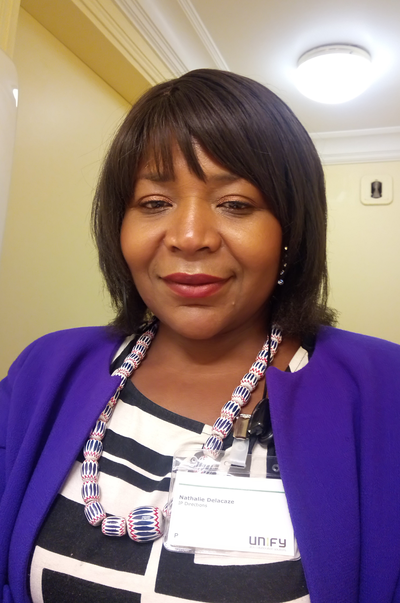

Nathalie de LACAZE
50 ans - Permis B
DEVELOPPEURE WEB ET WEB MOBILE
Titre de professionnalisation de niveau III chez
ALT RH
Full Stack : Frontend (UI/UX) et Backend (Création et Gestion de Bases de données)
Languages : HTML5 - CSS3 - JS/JQuery/JSON - PHP - REACTNative - REACTJS - MySQL - MariaDB - PostgreSQL...
Frameworks : Bootstrap - Bulma - LARAVEL - SYMFONY... Outils : VS Code - Apache - Node JS - Github - Trelo - Canva - Xampp - FileZilla - Figma - Bulma - Draw.io...
INGENIEURE COMMERCIALE
TELECOM TERRAIN - B2B CONFIRMÉE
Véritable chasseuse et éleveuse, culture du résultat et du service, esprit entrepreneurial et corporate, volontaire, ambitieuse, autonome, audacieuse, tenace, organisée, rigoureuse, méthodique, parcours riche, stable et ascensionnel, férue des nouvelles technologies, aimant le travail en équipe. Ouverte aux nouvelles opportunités
Maitrise d’outils commerciaux spécifiques de type CRM/ERP (Sales Force, Hermès Pro, Kara VS d’SFR devenu Price, Sésame Link'co, Clarify, India, Elios, Perform, e-Commande, Poseid …), de la bureautique (MSO 365, Thunderbird, Google Suite…), de travail collaboratif (Teams, Zoom, Voice 365 d'Ip Direction) d’Internet, des Réseaux sociaux, etc…
Adresse
68 rue Gambetta
92500 RUEIL MALMAISON
Téléphone
Email
Linkedin
Linksight
Mes centres d'intérêts
Nouvelles technologies
Community Management
Montage vidéos/photos
Films/Séries USA/Documentaires
Restauration/Mode/beauté/Décoration
Langues
Anglais - correct
Medumbà - fluent
Allemand - scolaire
Activités Associatives
Secrétaire et membre fondatrice de l’Association
KEUR KAMER
visible sur LinkedIn et Facebook
Présidente Exécutive de
LA CHINE POPULAIRE FANS CLUB DE DJ ARAFAT
de plus de 3 M de membres de par le monde
Présidente/Fondatrice du
MNGHU DREAMLAND
Bénévole à
Emmaüs/les Restos du Cœurs/le Secours Catholique
Membre du CA du
NEFA (Ndé En Force - Action Développement Innovation)
Vice-Présidente de
DIASPO NEFA
...
COMPÉTENCES
Prospecter et développer un portefeuille PME, PMI, Middle Market, GC et Secteur Public via la chasse active
Développer, enrichir le CA, gérer et fidéliser les clients d’un parc existant, prise de commandes
Identifier et qualifier les cibles, détecter les projets, auditer les services existants, analyser les enjeux et adapter les offres
Préconiser, conseiller, vendre, présenter, démontrer, répondre aux Appels d'offres, négocier, closer
Recruter, former, manager, assurer l’élaboration des stratégies de développement des objectifs des ventes, cooptation
Prendre et assurer les RDV, gestion du cycle de vente de la prospection au déploiement et suivi, gestion des partenariats
Concevoir des argumentaires, rédiger des propositions commerciales, reporting
EXPÉRIENCES
IP DIRECTIONS :
Opérateur de solutions TRUNK (2 ans)
Ingénieure Commerciale Terrain (VI)
de sept. 18 à sept 2020
Chasse active, prospection, développement et pilotage, accompagnement et formation de partenaires Opérateurs et Intégrateurs
de solutions informatiques et téléphoniques, fournir en mode indirect et marque blanche la solution le TRUNK SIP et les services
Connexes pour sa gestion (Portabilité, Affectation/Collecte des numéros fixes, la terminaison…) et les briques de services
Opérateurs (PFLAU, PDAAU, SIC/MOP, RSVA, VNO, FULL VNO)
Interlocuteurs :
DSI, DAF, Resp. partenariats, Resp. Achats, Gérants, Prescripteurs, IP, Opérateurs
CALL 4 U PRESTIGE – C4UP (1a et 1 Mois)
Consultante B2B Télécom/IT/Énergie
d'avril 2017 à mai 2018
Activités de Call Center B2B et d'Apports d’affaires dans les secteurs des Télécom/IT et des Énergies Renouvelables
3 Contrats de partenariat Télécom/IT (Distributeurs SFR Business et Bouygues Entreprises) et Énergies (ENGIE Pros)
Pipe de 105 affaires apportées en 11 mois dont 65 conclues
Interlocuteurs :
DSI, DG, DSG, DAF, Resp. Achats, Directeurs Techniques, Gérants, Prescripteurs, IP
VIVACTION (Groupe ITN France) :
Opérateur Télécom/IT/Réseau/Internet/Cloud/Cyber sécurité (4a)
Ingénieure Commerciale Terrain (VD)
fév. 2013 à mars 2017
Chasse active, développement, détection, conquête, vente, fidélisation, réduction du taux de Churn, renouvellement
Optimisation du CA de 4,8 M€ à 8,3 M€ dont CA généré de 3,5 M€ (+ 37%) en 4 ans et 1 mois
Chasse active, détection, conquête et gestion de 400 nouveaux clients ayant généré 2,8 M€
Développer, gérer, fidéliser et renouveler le parc confié de 800 clients : CA Farming généré de 0,7 M€
Interlocuteurs :
DSI, DG, DSG, DAF, Resp. Achats, Directeurs Techniques, Gérants, Prescripteurs, IP
Sté RTE Network :
Éditeur et Fournisseur de solutions Fax/SMS en mode SaaS (2a et 11m)
Ingénieure Commerciale B2B VI/VD Terrain de janv. 11 à déc 12
Chasse active, développementde portefeuille, pilotage des partenaires, accompagnement et formation, détection, conquête, vente, fidélisation, renew
Gérer les partenariats avec des Opérateurs, Éditeurs, Constructeurs de MFP, Installateurs privés
Optimisation du CA de 2,7 M€ à 4,1 M€ dont CA généré de 1,4 M€ (+ 34%) en 35 mois
Interlocuteurs :
DSI, DG, DSG, DAF Resp. Achats, Directeurs Techniques, Gérants, Prescripteurs, IP
AVENIR SARL :
Espace SFR Business Team (3a et 4 m)
SDA :
Espace SFR Entreprises (4a et 3 m)
Chef des ventes (AVENIR SARL) de juil. 2007 à nov. 2010
Commerciale/Resp. ADV (SDA) de mars 2003 à juin 2007
Recrutement, Formation, développement des compétences et management de 10 personnes
Prospection, développement, détection, conquête, vente, fidélisation, réduction du taux de Churn, renouvellement
Optimisation des CA de 38 M€ à 78,3 M€ dont CA générés de 40,3 M€ en 7 ans et 8 mois, pour les 2 sociétés confondues
Prospection, détection, conquête et gestion de 2500 nouveaux clients (par toute l’équipe)
Développer, gérer, fidéliser et renouveler les parcs confiés de 8 500 clients
Interlocuteurs :
DSI, DG, DSG, DAF Resp. Achats, Directeurs Techniques, Gérants, Prescripteurs
Stés ACTEL - INTERSAT TELECOM - IMARKTEC - CACEB France - P.P.D.A. (5 ans)
Responsable Plateau/Commerciale Sédentaire/Téléactrice B2B de sept 1997 à fév 2003
Recrutement, Formation, développement des compétences et management de 20 à 70 commerciaux et TA
Prospection, introduction et transformation des campagnes sur la plateforme, conception des argumentaires
Développement de la stratégie commerciale et marketing, organisation et planification des rendez-vous,
Gérer et suivre un Parc, cibler, constituer, développer, gérer un portefeuille de nouveaux clients, rédiger les propales,
Téléprospection, détection de projets, qualification de fichiers, prise de RDV, conseil, négociation, vente, reporting
Interlocuteurs :
DSI, DG, DSG, DAF Resp. Achats, Directeurs Techniques, Gérants, Prescripteurs
FORMATIONS
Cursus scolaire
1991 : Licence ès Sociologie à l'Université de Douala - CAMEROUN
1990 : DEUG ès Sociologie à l'Université de Douala - CAMEROUN
1988 : Baccalauréat Littéraire au Lycée JOSS de Douala - CAMEROUN
Professionnalisation
2021/2022 : Développeur Web et Web Mobile chez ALT RH (en cours)
2012 : Management d'Entreprise par la CCIS (93)
2011 : Création et Administration d'Association et Fondation - Maison des Associations de Paris
2009 : Certification CISCO d'Ingénieure Commerciale par SFR
2005 : Certification VS Kara d'Administration des Ventes par SFR
1997 : Secrétaire Médico-social à Culture et Formation
1993 : Directrice d'établissement hotellier à Novotel - Douala-CAMEROUN